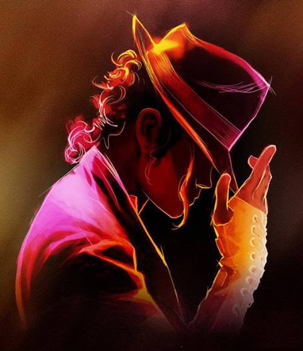
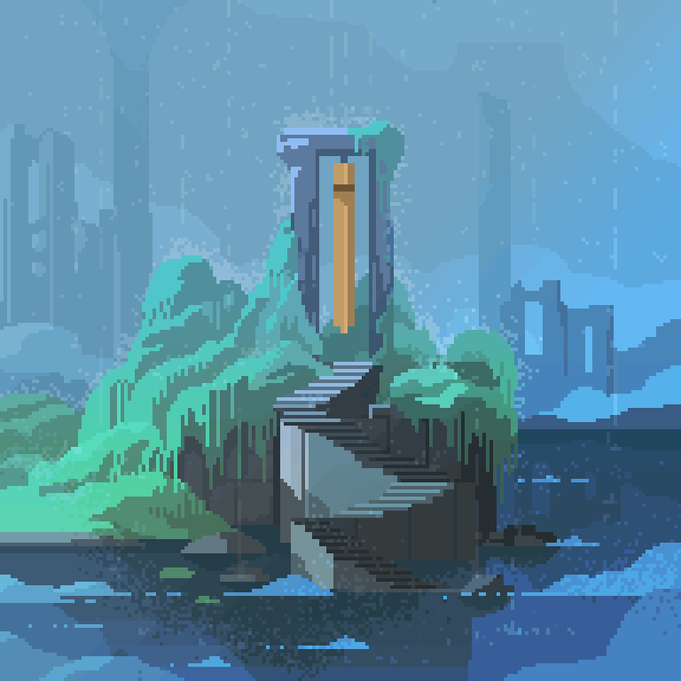
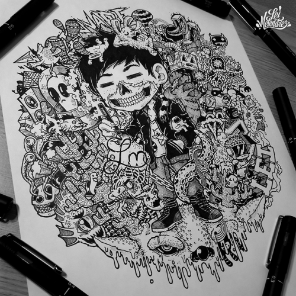

(Sim, nós escrevemos 'Arte' de novo.) Nesta região voce pode aprender todos os tipos de emissões sonoras agradaveis que os seres humanos...Ou então música, chame como quiser. Mas ainda continua sendo a mesma página. É só clicar aqui, ou ir para o menu, lá em cima!
Música
A grande e adorável música! Bom, música é uma arte, correto? Sim! Então aqui tem música. É só navegar para achar.
Referências, conteúdo, e até mesmo alguns tutoriais e materiais para estudo e prática estão aqui, livres para você usar. Só...Não leve seu violão para a escola depois que aprender a primeira música e achar que é o Jimi Hendrix. Sério. Nos faça esse favor.
E, bem, como você vê nessa absolutamente maravilhosa pintura ao lado, a música, de certa forma, é retratada
em outras formas de arte, como as pinturas, desenhos, animações, rabiscos artes abstrata, etc. São as chamadas artes visuais.
Artes Visuais
Tudo bem, eu admito que 'Artes Visuais' pode ser um nome formal, mas é o melhor que os desenvolvedores (vulgo nós) puderam
arranjar. Desculpe.
Basicamente, é o que eu citei acima: pinturas, desenhos, animações, Pixel Art (♥)... E derivados. Tudo isso é arte visual e, se bem feita, consegue mexer com o interior do telespectador e sua forma de pensar.
(Pixel Art é incrível, não é? Não vamos ensinar a fazer, mas vamos admirar e discutir o quanto é maravilhoso. Olhem esse GIF!)
O grande ponto aqui é criatividade. E você pergunta: "Como ser criativo?", e eu respondo: a criatividade não é como matemática ou português, onde um professor passa uma série de regras e fórmulas no quadro, você decora, estuda e faz uma prova. Não. Criatividade é espontâneo, e pode vir a qualquer momento. Quando a criatividade aparece, você tem ideias. É assim que funciona a arte: ela surge de uma ideia criativa, que é executada e gera a obra final. É difícil, mas pode trazer resultados incríveis.
Quer um exemplo? Veja a imagem ao lado. Esse tipo de arte se chama Doodle Art. Surgiu a partir de uma ideia criativa, e a
execução foi esta. Muito bom, não é? Pois é. É claro que ninguém começa nesse nível, mas sem dúvidas é possível chegar até lá. Aqui você vai encontrar o que
precisar para entrar nesse maravilhoso mundo de rabiscos traços, pintura e música!
Ah! Antes que eu me esqueça...Se você já gostou dessa primeira página e quer
saber
quem são os criadores, basta clicar aqui...Ou clique só por querer, mesmo. Você tem o livre arbítrio.